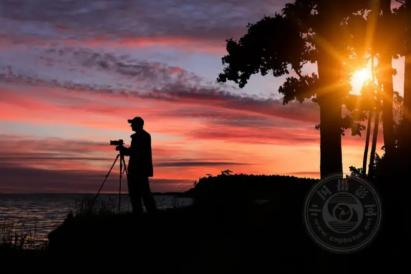

Published: 2023-03-03
Source link: https://www.cnphotos.net/academy/show-120.html
In photography, we often talk about light, color, lines, and shapes. We break a scene into basic elements, then recombine them based on their best traits, and add our own feeling and experience. The photo that results is a visual story. A photo is not only a story about the foreground, even though the foreground object usually plays the lead role.
A silhouette is a subtle way to shoot. It uses the background as the focus and the lead, to create interesting angles and stories.

When the subject is in shadow and the background is well lit, we can only capture the shape of the subject, not its other details. The subject is entirely black. We call an image shot this way a silhouette.
To create a strong silhouette, your subject needs an interesting outline, and a meaningful background. Then all you do is expose for the background. The human brain recognizes familiar shapes on its own, such as trees, birds, flowers, people, and mountains. That is the power of a silhouette. Even though the other features of the subject are hidden, the viewer still recognizes it.
Silhouettes add a wonderful angle to your visual story, but they are not easy to catch. Beyond the difficulty of finding an attractive shaped subject against a bright background, you must also master the technique behind silhouettes. This includes using backlight, using the best camera settings, and perhaps learning to set an external flash.
Use backlight to create a silhouette
Backlight is usually not a photographer's preference, because the gap between highlight and shadow is often larger than the camera's dynamic range. But to create a silhouette, you usually need the light to come from behind the subject.
Place the subject between the camera and the light source, so the subject blocks the light and you avoid the risk of flare and overexposure. You can add other elements, too. Landscape and nature photographers use branches, buildings, and rocks to filter the sunlight that reaches the camera. A bright light source, such as direct sun in the frame, can ruin your photo and even harm your eyes.
Expose for the background, and make sure you use a deep depth of field. If you want a sharp, clear background, the whole frame must be sharp. Use a fast shutter speed, 1/125 or faster, and a small aperture, f/8 or higher. If the light is not enough for these settings, raise the ISO a little. But do not overdo it. A high ISO raises noise, and that noise is clearly visible.
If you use sunlight as the source, plan your shoot for when the sun is low and its intensity is lower, such as early morning, late evening, or an overcast day. It is easier to catch a silhouette without overexposing the sky. Also, the golden hour, the first hour after sunrise and the last hour before sunset, and the blue hour, the last hour before sunrise and the first hour after sunset, give silhouettes stunning color and a perfect mood for the outline. If you cannot shoot in harsh sun, try a lens hood. Also, do not forget to fit a UV filter. You can also shift your position a little, so the sun is not directly in front of the lens.
Use spot metering
To create a silhouette, you intentionally underexpose the subject and reduce it to a black shape. At the same time, you need a perfectly exposed background.
One trick photographers use for silhouettes is spot metering. Spot metering reads only the light around the focus point. If you choose a focus point on the bright background, the camera reads the scene as well lit, and it uses a faster shutter and a smaller aperture. Choosing the highlight as the metering area helps you underexpose your subject. The brighter the background, the darker the subject.
Try an external flash
Sometimes you cannot get backlight by changing your position, but you still want a silhouette. Then you need a way to make the background bright and colorful and the subject dark.
One way to light the background and make it stand out in the frame is to use a flash. Not the camera's built-in flash, because that lights the subject. Use an external flash that you can place behind the subject. This is a studio technique, and it is also used in other types of photography, such as macro, still life, commercial, and even portrait work.
An external flash setup lets you adjust the intensity, direction, and color of the light. You can use it to make the background brighter, then expose for the background to underexpose the subject. But remember that flash intensity falls off with distance. It works when the background is close to the subject.
Create a silhouette in post-processing
If you cannot catch a silhouette in-camera, you can create one in post-processing. But you need to choose a photo that fits a silhouette, with a suitable background, an interesting subject, and the right balance of light and dark.
With advanced editors such as Adobe Photoshop and Affinity Photo, you can cut out the subject and use tools such as dodge and burn, levels, and brightness to turn it into a black shape.
Not every photo is right for a silhouette. An editor only adjusts the result later. You must decide the composition when you take the photo.
Conclusion
You create a silhouette in just a few steps. Find an interesting subject and background, place the light source between the subject and the background, then set the exposure for the background. Give it a try.